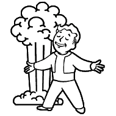

Marzyciel¶
{kind=link}
Marian jest marzycielem i ciągle lata obłokach. Żeby, tego dokonać potrzeby jest mu klient do aws i azure.
Rola: Clouds¶
roles/
projects/
tasks/
main.yml
aws.yml
azure.yml
templates/
aws_cli_config.j2
aws_cli_credentials.j2
defaults/
main.yml
Templates¶
[default]
output = {{ aws_output_format }}
region = {{ aws_region }}
[default]
aws_access_key_id = {{ aws_access_key_id }}
aws_secret_access_key = {{ aws_secret_access_key }}
defaults¶
$ANSIBLE_VAULT;1.1;AES256
63373531646461306634396634643263323331333634333436326636326539363765636633616634
3637343365376334373765653162633033393837343161620a663534353832666234653738386661
37323965306262393864346434653566333862666164643839343433333031653261636562636335
3335366439336230650a656334633532306431366530343461623663373663613734373563346336
31396233353333616431616430643238613537393130363962393838643938663065303831346536
61343965303339383634386366393364623335623032376263643230653862376638643039396562
33356332336339313135613664646162656535643439653938333162383033633232636566346632
31383538666264353231646635646634313834613534626434363432393837366336383563313765
32343932396133323637666632366237393036363830383833393465383230613132333332643138
39366335643365613364333261666237336232393366633463626565326162666337666635623337
33633533636330313132653336383566353863353733656231623931383337633733643334336461
36313431363437666236
Tasks¶
- import_tasks: aws.yml
- import_tasks: azure.yml
- name: create config directory
file:
path: '{{ home_path }}/.aws'
state: directory
- name: install aws cli
pip:
name: awscli
state: present
- name: Copy AWS config
template:
src: aws_cli_config.j2
dest: '{{ home_path }}/.aws/config'
- name: Copy AWS CLI credentials
template:
src: aws_cli_credentials.j2
dest: '{{ home_path }}/.aws/credentials'
- name: download azure cli
pip:
name: azure-cli
state: present
Output¶
$ ansible-vault create playbooks/roles/clouds/defaults/main.yml
New Vault password:
Confirm New Vault password:
$ ansible-vault view playbooks/roles/clouds/defaults/main.yml
Vault password:
aws_output_format: 'table'
aws_region: 'eu-west-1'
aws_access_key_id: 'access_key_id'
aws_secret_access_key: 'secret_access_key'
$ ansible-playbook -i inv.yml playbooks/clouds.yml --ask-vault-pass
Vault password:
PLAY [install and configure clouds] ******************************************************************************************************************
TASK [Gathering Facts] *******************************************************************************************************************************
ok: [localhost]
TASK [clouds : install aws cli] **********************************************************************************************************************
ok: [localhost]
TASK [clouds : Copy AWS config] **********************************************************************************************************************
ok: [localhost]
TASK [clouds : Copy AWS CLI credentials] *************************************************************************************************************
ok: [localhost]
TASK [clouds : download azure cli] *******************************************************************************************************************
ok: [localhost]
PLAY RECAP *******************************************************************************************************************************************
localhost : ok=5 changed=0 unreachable=0 failed=0
Note
Vault pozwala na szyfrowanie plików ze zmiennymi. vault